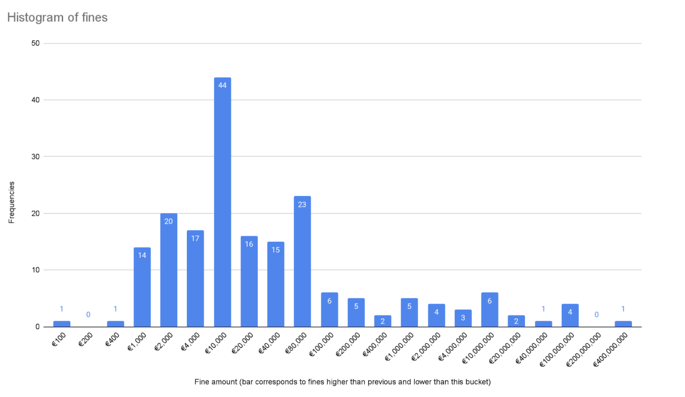

On this page you will find our recommendations for designing a valid consent notice. In each section, we first give you our interpretation in simple language for web developers, not lawyers. We then refer you to the legal sources relevant to each statement.
Disclaimer: Please note that we are neither lawyers nor legal advisors. The information provided on this website and by CookieAudit does not constitute, and is not intended to constitute, legal advice. Instead, all information, content and materials are for general informational purposes only.
The views expressed on this page and the CookieAudit extension are those of the individual authors writing in their personal capacity - not those of their employer, ETH Zurich as a whole. All liability for actions taken or refrained from based on the contents of this page or the CookieAudit extension is hereby expressly disclaimed. The content of this posting is provided "as is"; no representation is made that the content is error-free.
Cookie consent is governed by two major laws in the European Union. The ePrivacy Directive (ePD) requires consent for all data processing, except for strictly necessary processing (opt-in requirement). The General Data Protection Regulation (GDPR) then defines what constitutes valid consent and sets fines that can be as high as 4% of annual turnover or €20 million, whichever is greater. The average fine for insufficient consent is 3.2 million euros, with a median of 10 thousand euros.
Note that both of these laws rarely mention cookies, they talk more about general data collection and processing than about the technologies used. As developers, we know that cookies are not the only technology used to collect private data from users. Therefore, consider framing consent as "data collection and processing consent" or at least mention in the opening sentence "We use cookies and similar technologies..." as Google and Facebook do.
The example about cookies from the GDPR, Recital 30:
Natural persons may be associated with online identifiers provided by their devices, applications, tools and protocols, such as internet protocol addresses, cookie identifiers or other identifiers such as radio frequency identification tags. This may leave traces which, in particular when combined with unique identifiers and other information received by the servers, may be used to create profiles of the natural persons and identify them.
These lines state that all identifying data, including cookies, qualify as personal data and are therefore subject to the GDPR. Companies have the right to process their users' data as long as they obtain consent or have a legitimate interest.
The GDPR allows the processing of personal data only if you have a legal basis for it. In 99% of cases, the required legal basis is consent. The GDPR requires that consent must be actively and freely given, unambiguous, specific, and informed. This makes each of these common deceptive design patterns illegal:
The legal bases for the collection and processing of personal data are defined in Art. 6 GDPR. We are almost certain that the legal basis you need is a) consent.
The consent requirements are then defined in Art. 7 and Art. 32 GDPR.
Data collection and processing is only allowed for "specific, explicit and legitimate purposes". While you are welcome to define each processing individually in plain language, it is common to group processing purposes into categories, and CookieAudit assumes such grouping. Although these categories are defined by non-legal entities, they are universally accepted. CookieAudit can classify cookies into the following four categories based on the ICC UK Cookie Guide.
During a scan, CookieAudit tries to classify each cookie without considering how it was declared. This is done with machine learning algorithms and was first implemented by CookieBlock and reused in CookieAudit. Due to the nature of this approach, CookieAudit is not always correct when classifying cookies.
Personal data shall be: [...] collected for specified, explicit and legitimate purposes and not further processed in a manner that is incompatible with those purposes [...] adequate, relevant and limited to what is necessary in relation to the purposes for which they are processed (‘data minimisation’); accurate and, where necessary, kept up to date [...]
Taken from Art. 5 GDPR.
You must declare and provide information about all the purposes of the data processing (except for the strictly necessary ones). If you decide or your CMP requires to list all cookies (OneTrust, CookieBot, Termly, etc.), you must describe the cookies, provide their individual purposes and expiration date. If you decide to list only third parties (we are unable to judge whether this is compliant), you should list the same information for each third party.
The controller shall take appropriate measures to provide any information referred to in Articles 13 and 14 [...] relating to processing to the data subject in a concise, transparent, intelligible and easily accessible form, using clear and plain language [...].
You can read more about what information needs to be provided in Art. 13 GDPR and Art. 14 GDPR. The Planet 49 case confirmed that these requirements also hold for cookies.
Art. 13 GDPR defines the necessary information that needs to be declared in relation to cookies. This includes the storage period of the cookie. A failure to accurately declare the expiration time for cookie therefore violates the GDPR. CookieAudit reports each cookie for which the actual expiry is more than 1.5 times the declared period.
Some cookies, such as "OptanonConsent" and "CookieConsent", are excluded from this analysis. They come from CMPs and store the visitors' cookie preferences. In many instances we found that these cookies have a higher expiration date but are corrected as soon as the user interacts with the consent notice.
Per GDPR it should be as easy for users to withdraw their consent as it is for them to give their consent. This means a "Reject non-essentials" button should be present on the initial popup and not nested inside a settings page.
The French CNIL fined Google and Facebook 150 and 60 million euros, respectively. This was for making it easier to accept all cookies than to reject them. After this fine, both companies implemented new consent notices with buttons to reject all cookies.
A preselected category means that the checkbox in the CMP popup is selected by default for this category. This means that the user must take additional steps to disallow cookies in that category. The only category that can be pre-selected is "essential cookies". In order to comply with the GDPR, you should make sure that it is as easy to give consent as it is to disallow the setting of non-essential cookies on the website.
The ePrivacy Directive requires that any data processing requires consent (i.e., opt-in), except for strictly necessary processing. This is confirmed by the French CNIL's fine against Google and Facebook of 150 and 60 million euros, respectively.